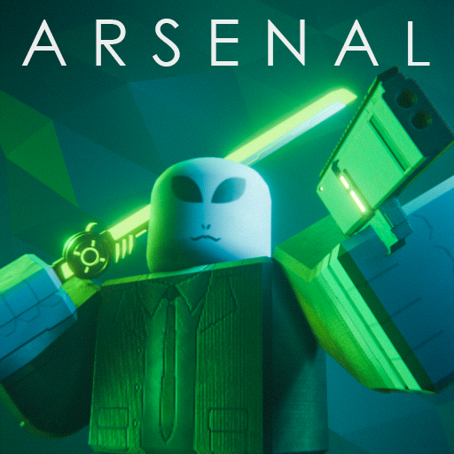
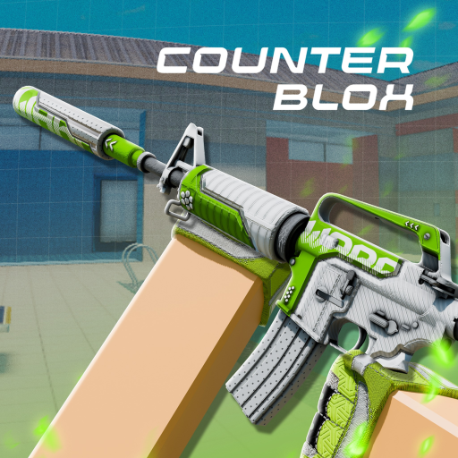
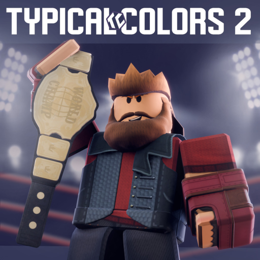

Independent TypeScript website, C# server plugins, and a separate JavaScript Discord bot.
TypeScript · C# · JavaScript
Projects & experience
Websites, gameplay systems, and game server infrastructure.
Independent TypeScript website, C# server plugins, and a separate JavaScript Discord bot.
TypeScript · C# · JavaScript

Weapon framework, Gun Game rotation, persistent player data, and progression systems.
Lua · Roblox · DataStore

Weapon framework, persistent data, Twitter code redemption, and trading.
Lua · Roblox · DataStore

Object oriented PlayerClass architecture, player data, and gameplay rotation.
Lua · Roblox · DataStore
Roblox development · Approximately 2015 to 2023
My work across these games spanned core gameplay, persistent player data, and progression systems, using Roblox’s built-in development environment.
DataStore experience across the games
Persistent data
Purchase-related data was one category I worked with across the Roblox projects.
Persistent data
Player statistics retained between sessions, with project-specific details on each game’s page.
Persistent data
Inventory persistence was part of my DataStore work on Arsenal, Counter Blox, and Typical Colors 2.
Persistent data
My shared DataStore experience also included audit log data within the games I contributed to.
Persistent data
Retaining progression between sessions, including Arsenal’s event and battlepass progress.